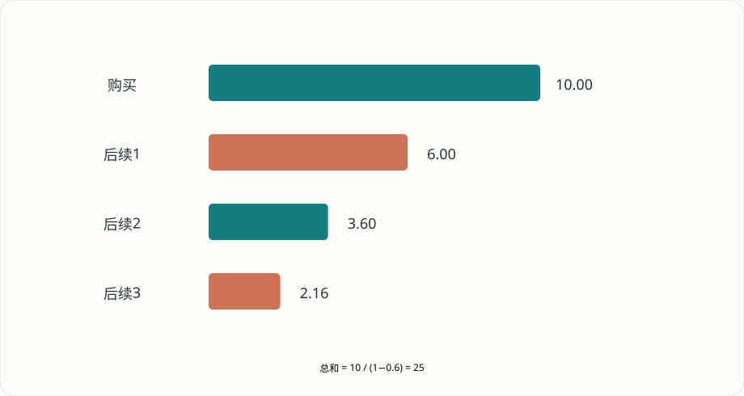
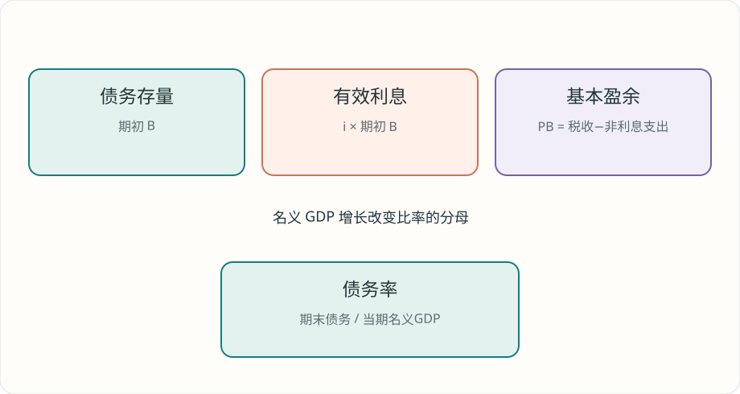

财政政策与公共债务
同样10元财政购买，为何不存在固定乘数？利率大于增长率，又为何不能直接断言债务危机？
自动稳定器如何在衰退时发挥作用？
经济活动下降后，家庭税前收入与利润税基缩小，既定税制下税收往往随之减少；符合资格的失业者可能领取保险或救助，使可支配收入不必与税前收入等比例下跌。这是自动稳定器，并不要求每次经济下降都通过新的刺激法案；强度受税制、保障资格及政策执行约束。美国国会预算办公室的自动稳定器研究把税收与失业保障列为主要途径。
为什么同样的政府购买没有统一的乘数？
固定价格、有闲置生产能力、投资和税收不变且不考虑进口时，消费函数的边际消费倾向为 c=0.6。政府购买新增10，第一轮收入多10，下一轮居民消费多6，再下一轮多3.6，依次递减；若这个简化反馈持续，总收入增加25。

现实财政乘数受经济闲置产能、开放度、政策预期、货币政策、融资安排和支出类型共同影响。单纯看到政府支出和 GDP 一起上升，不足以识别因果乘数；不能将这里的2.5当作某国现实政策的固定估计。
债务为何必须区分本金、利息与基本收支？
设上期期末债务 Bₜ₋₁，本期有效名义利率 i，基本盈余 PBₜ 是当期财政收入减去不含利息的支出。若暂不考虑汇率和估值调整，期末债务等于期初债务加名义利息再减基本盈余。基本赤字与包含利息的总赤字不同，债务存量也不能直接与一年新增赤字混作同一种量。

r 大于 g，债务比率就必然失控吗？
为计算债务与经济规模的关系，令 d 为债务占 GDP 的比率，n 为名义 GDP 增长率，pb 为当期基本盈余占当期 GDP 的比率。债务动态的一个简化公式如下，它是账户恒等式，不包含市场违约条件。
改变债务滚动参数
期初债务率固定80%，图和计算结果随名义利率、增长率和基本盈余同步更新。
构造案例：(1.05/1.03)×80−1≈80.55，增加约0.55个百分点；若保持80%不变，所需基本盈余率约为1.55%。正利差带来滚动压力，但不自动等于违约。
财政可持续性为什么不能用单个数字下定论？
| 变量 | 主要解释 | 不能单独推出 |
|---|---|---|
| 有效利率与增长率 | 债务滚动压力 | 正利差必然违约 |
| 基本财政收支 | 财政能否逐步调整 | 所有增税都无经济代价 |
| 债务币种与到期结构 | 外汇及再融资风险 | 本币债永远无风险 |
| 估值与存量流量调整 | 债务存量可能与赤字不一致 | 总赤字恒等于债务新增量 |
IMF 债务框架会考虑基本盈余、增长、币种、利率和存量流量调整；BIS 还提示利息与增长差本身会随财政立场和风险预期变化。拥有本币发行权不消除供给约束、通胀和制度信誉问题；讨论现代货币理论也应明确这些不同层面的约束。
来源与阅读
机构资料用于核对制度和公式；本文所有数值例子均为构造。